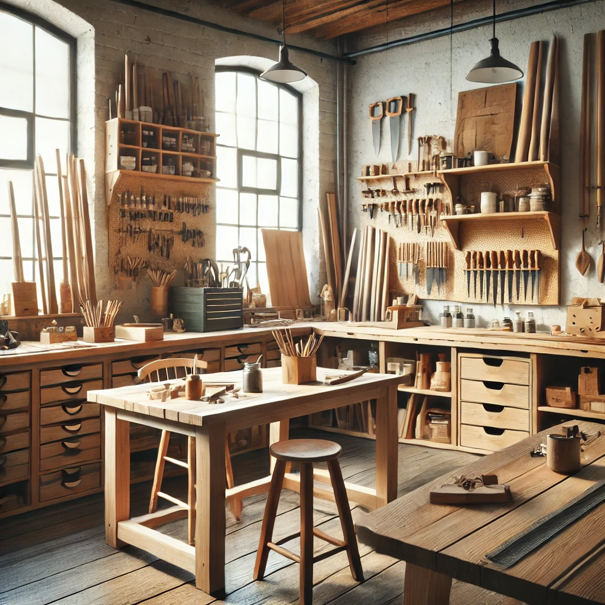
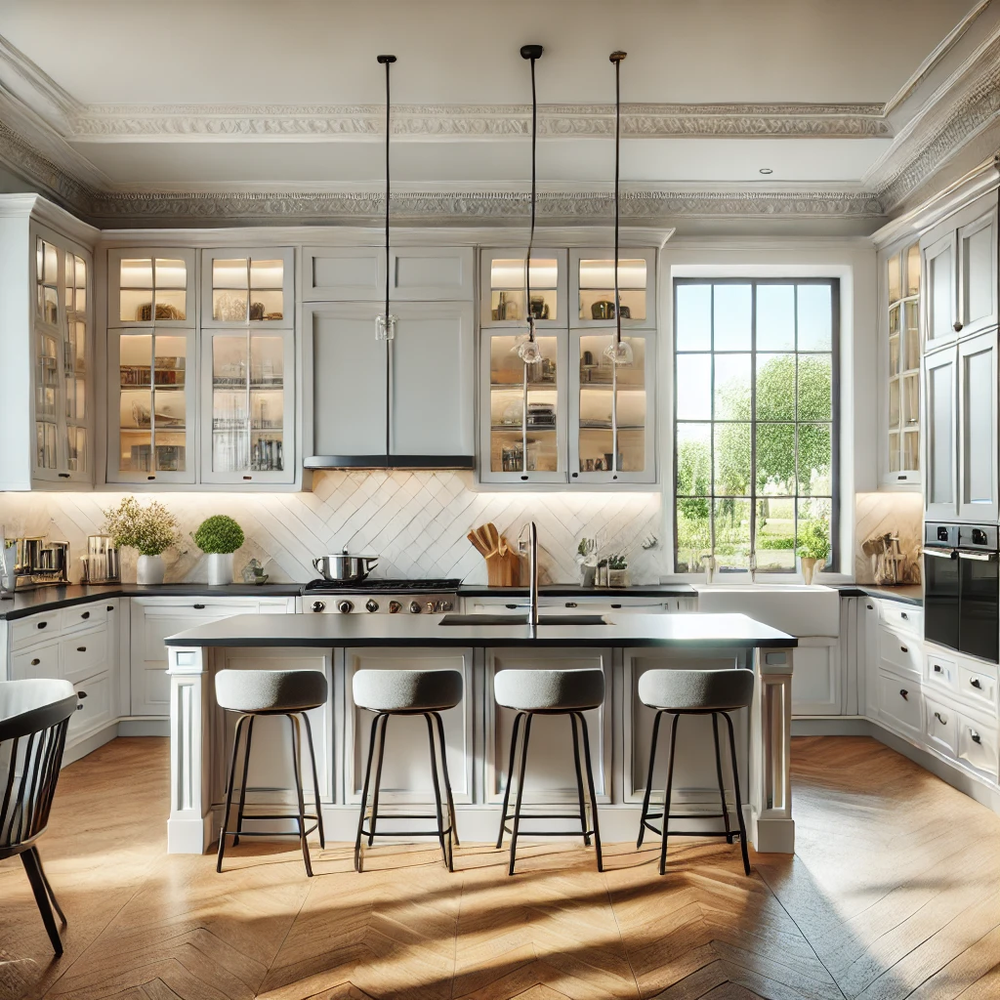
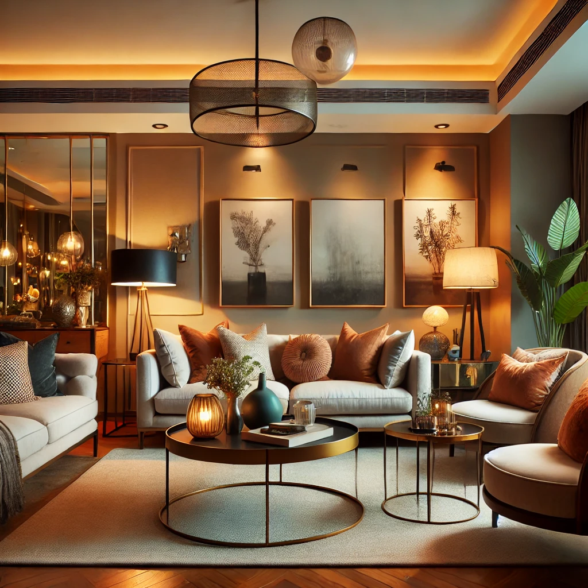

Nos Services
Chez Artisan Expert, nous offrons une gamme complète de services artisanaux adaptés à vos besoins. Notre objectif est de vous aider à réaliser vos projets grâce à des solutions personnalisées et professionnelles.
- Rénovation : Programmes personnalisés pour rénover votre maison ou votre espace de travail.
- Décoration intérieure : Techniques de décoration pour améliorer l'esthétique et le confort de vos espaces.
- Construction : Services de construction pour créer des structures solides et durables.
- Menuiserie : Conception et réalisation de meubles sur mesure et travaux de menuiserie.
- Peinture : Travaux de peinture intérieure et extérieure pour rafraîchir vos espaces.
Nos Réalisations
Nos installations modernes sont équipées de tout le matériel nécessaire pour fournir des services de qualité. Découvrez nos différentes réalisations en images :



Exemples de Projets
Voici quelques exemples de projets que nous avons réalisés :
- Rénovation de cuisine : Transformation complète pour une cuisine moderne et fonctionnelle.
- Décoration de salon : Création d'un espace de vie confortable et esthétiquement plaisant.
- Construction de terrasse : Réalisation d'une terrasse en bois pour profiter de l'extérieur.
Pour en savoir plus ou pour discuter de votre projet, contactez-nous.